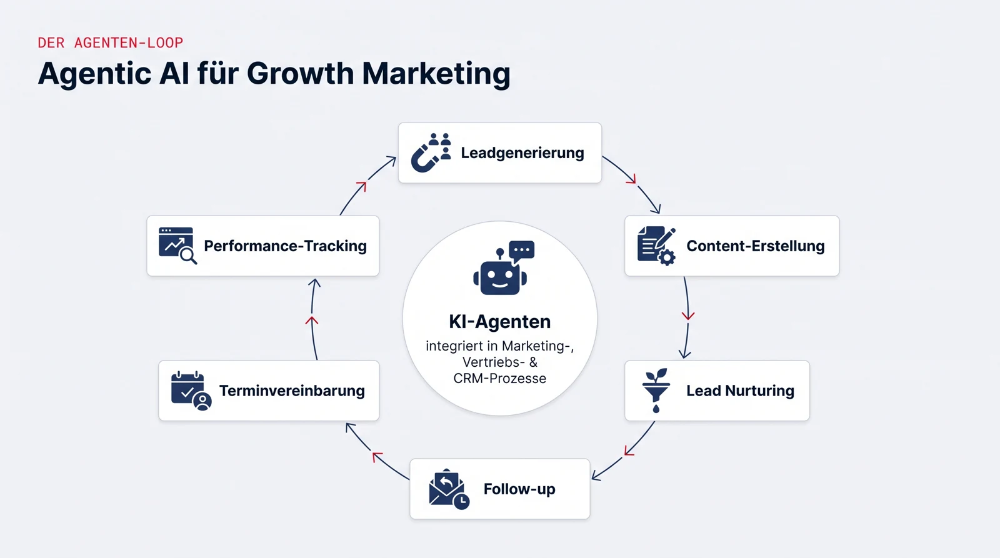

Agentic AI für Growth Marketing
Eckdaten
| Art | Interdisziplinäres Projekt |
| SWS | 5 |
| Kategorie | Management und IT (338025-338027 bzw. 338085-338087) |
| Projektpartner | SiMa.ai |
| Betreuung | Prof. Dr. Jan Kirenz |
Worum es geht
Ziel des Projekts ist es, Potenziale von Agentic AI für datengetriebenes Growth Marketing aufzuzeigen und praxisnah nutzbar zu machen.
Dazu werden aktuelle Best-Practice-Ansätze analysiert und funktionsfähige Prototypen entwickelt, die Aufgaben wie Leadgenerierung, Content-Erstellung, Lead Nurturing, Follow-up, Terminvereinbarung und Performance-Tracking agentenbasiert unterstützen oder automatisieren.
Der Fokus liegt auf der nahtlosen Einbindung agentenbasierter KI in bestehende Marketing-, Vertriebs- und CRM-Prozesse sowie auf der Evaluation ihrer Auswirkungen auf Effizienz, Sichtbarkeit, Personalisierungsgrad, Conversion-Potenziale und Ergebnisqualität.
Sie erwerben dabei echte KI-Kompetenzen, ganz ohne Programmierung: Sie lernen, KI-Lösungen ideal für Marketing und Vertrieb einzurichten, also Agenten zu konfigurieren, sie mit Skills, Anweisungen und Wissensquellen auszustatten und in bestehende Prozesse einzubinden.

Was bringt es mir?
Marketing und Vertrieb gehören zu den Bereichen, in denen KI-Automatisierung am schnellsten Einzug hält, entsprechend gefragt sind Leute, die beides verstehen: die Fachseite (Leads, Funnel, CRM) und die Fähigkeit, KI dafür richtig einzurichten. Nach dem Projekt haben Sie genau diese Kombination an einem realen Fall geübt und ein konkretes Referenzprojekt für Bewerbungen, egal ob Richtung Marketing, Produktmanagement oder Beratung.
Der Projektpartner: SiMa.ai
SiMa.ai ist ein KI-Chip-Unternehmen aus dem Silicon Valley: Es entwickelt spezialisierte Chips samt Software, mit denen KI-Anwendungen direkt auf Geräten laufen (Edge AI), etwa in Industrie, Robotik und Fahrzeugen. Das europäische Büro sitzt in Stuttgart, von dort aus wird der europäische Markt aufgebaut.
Genau hier setzt das Projekt an: Growth Marketing für ein technisches B2B-Produkt in einem jungen Markt. Sie arbeiten an realen Kampagnen mit den Werkzeugen des Unternehmens und stellen Ihre Ergebnisse direkt im Stuttgarter Office vor.
Ablauf im Semester
- 4 Blocktage vor Beginn der Vorlesungszeit: Einführung in Agentic AI, die verwendeten KI-Werkzeuge und die Aufgabenstellung des Partners.
- Wöchentliche Termine während der Vorlesungszeit: Arbeitsphasen im Team, Reviews und Abstimmungen mit dem Projektpartner.
- Am Semesterende präsentieren Sie Ihre Prototypen und die Evaluationsergebnisse.
KI-Werkzeuge
Sie arbeiten mit KI-Lösungen, die ohne Programmierkenntnisse produktiv einsetzbar sind:
- KI-Lösungen wie Claude Code und Gemini: Sie lernen, diese Agenten richtig einzurichten, mit Skills, Anweisungen und Wissensquellen, damit sie Recherche-, Content- und Analyseaufgaben zuverlässig übernehmen
- n8n: automatisiert Lead-Nurturing- und Follow-up-Strecken und verbindet die Agenten mit dem Marketing-Stack, per visuellem Baukasten statt Code
- Marketing-Stack: Anbindung an CRM- und Marketing-Tools
Sie müssen keines dieser Werkzeuge vorab beherrschen, die Einführung erfolgt in den Blocktagen. Einen Eindruck von Claude Code gibt dieses offizielle Anthropic-Video (englisch):
Voraussetzungen
- Interesse an Marketing, Vertrieb und datengetriebenen Prozessen
- Affinität für neue Technologien; Programmierkenntnisse sind nicht erforderlich
- Bereitschaft zur Teamarbeit und zur Abstimmung mit einem Unternehmenspartner
Was Sie lernen
- Growth-Marketing-Prozesse (Leads, Funnel, Conversion) verstehen und KI-Einsatzpotenziale bewerten
- KI-Lösungen wie Claude Code und Gemini für Marketing und Vertrieb einrichten: Agenten konfigurieren, Skills anlegen, Wissensquellen anbinden
- Marketing-Workflows mit n8n automatisieren
- Wirkung von KI-Automatisierung messen und bewerten (Conversion, Personalisierung, Effizienz)
- Ergebnisse strukturiert aufbereiten und vor einem Unternehmenspartner präsentieren
Bewerbung und Kontakt
Die Vorstellung der Projekte und die Platzvergabe laufen über den Moodle-Kurs der Fakultät. Bei Fragen vorab: kirenz@hdm-stuttgart.de